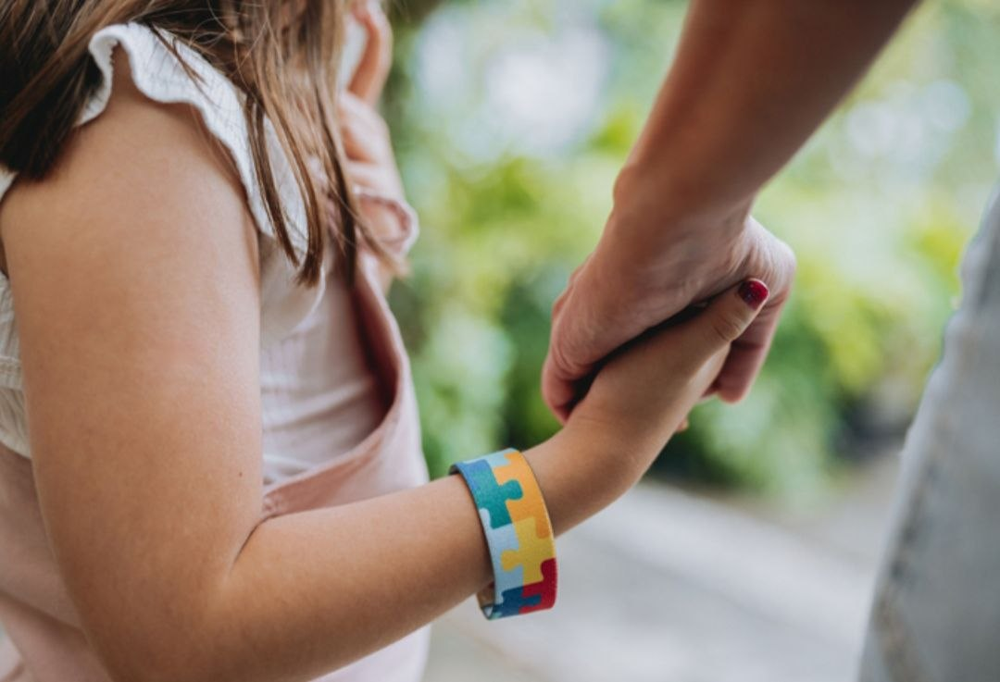

KIND
TEAM
NESS

Misiunea echipei KindnessTeam este de a aduce schimbare reală în viața familiilor vulnerabile și a copiilor cu nevoi speciale, acolo unde dificultățile zilnice par uneori greu de depășit. Ne propunem să fim mai mult decât un grup de voluntari — să fim un sprijin constant, o voce a empatiei și un semn că nimeni nu este uitat.
Prin acțiunile noastre, oferim ajutor concret (alimente, haine, rechizite), dar și sprijin emoțional, încurajare și atenție pentru cei care au cea mai mare nevoie. Credem că fiecare copil merită șansa la o viață demnă, iar fiecare familie merită susținere în momentele grele.
KindnessTeam își asumă rolul de a construi punți între oameni, de a reduce distanțele sociale și de a transforma indiferența în implicare. Ne dorim o comunitate în care bunătatea nu este doar un cuvânt, ci o acțiune zilnică care schimbă vieți.

Proiectul "SAFE FUTURE" demonstrează că implicarea tinerilor poate avea un impact real asupra comunității. Prin ajutor oferit acolo unde este nevoie, KindnessTeam reușește să aducă ușurare în viețile celor care se confruntă cu dificultăți și să ofere copiilor cu nevoi speciale mai multă atenție și sprijin. Astfel, se creează un mediu mai uman, în care oamenii nu rămân indiferenți, ci aleg să se ajute reciproc.